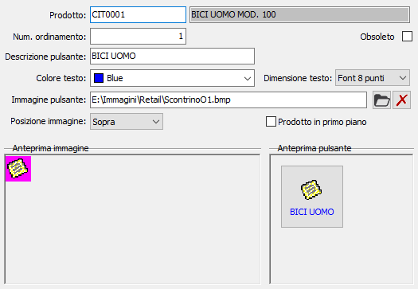

La tabella consente di configurare i prodotti di utilizzo più frequente associandoli a dei pulsanti che compariranno nella finestra richiamata dal pulsante Preferiti all'interno di OS1SalePoint; le dimensioni del pulsante sono definite in configurazione.
E' possibile definire un solo pulsante per prodotto, ma non c'è limite ai pulsanti definibili che saranno visualizzati in una finestra con più pagine.

Per ogni prodotto viene riportata la parte iniziale della descrizione nel campo Descrizione pulsante ed è possibile definire colore del testo, dimensione del testo, immagine e posizione dell'immagine; è inoltre possibile assegnare un numero di ordinamento in modo da visualizzare i pulsanti in un determinato ordine. Nella parte destra in basso viene visualizzata l'anteprima di quello che sarà il pulsante definitivo.
La path dell'immagine non è modificabile dal campo testo, ma solo tramite i pulsanti a lato: la cartella per selezionare l'immagine e la X rossa per eliminarla.
La spunta su "Prodotto in primo piano" indica che il prodotto preferito deve comparire sulla finestra principale e non solo sulla pagina dei preferiti. Sarà possibile definire un massimo di 5 prodotti in primo piano.